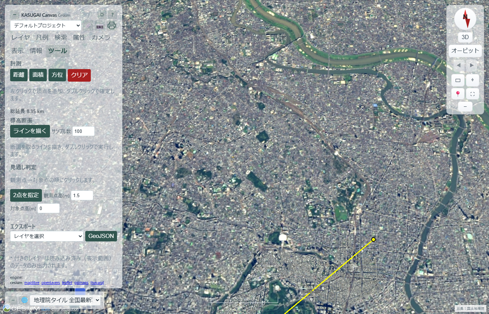

レイヤパネルの🧰ボタンで開くツールドック（画面上部のバー）の「計測」パネルです。地図対話モードの開始時はバーが自動で畳まれます。すべてブラウザ完結・静的配信のみで動作します。
使い方
📏 計測（距離・面積・方位）
左クリックで頂点を追加、ダブルクリックで確定（Esc で中断・クリアボタンで消去）。距離は測地線（EllipsoidGeodesic）で区間ラベルと総延長を表示、面積は接平面シューレース近似＋周囲長、方位は2点の初方位・逆方位・距離を表示します。地形追従クリックのため 3D 表示時も地表値です。

対応エンジン
Cesium・MapLibre・OpenLayers・Leaflet・GSI Maps（iframe 内 Leaflet へ描画）。2D エンジンでは共有モジュール（web/shared/geo-tools-2d.js）が同一 UI・同一 API を提供します。Navara は地物ピック非対応のため未提供です。
AI からも操作できます — measureDistance・measureArea・measureBearing の専用ツール（5-3 AI ツール仕様）。
設定方法
このツールは .kasc の設定行を持ちません（UI 操作のみです）。関連するレイヤー設定は 6-2 インスペクター を参照してください。